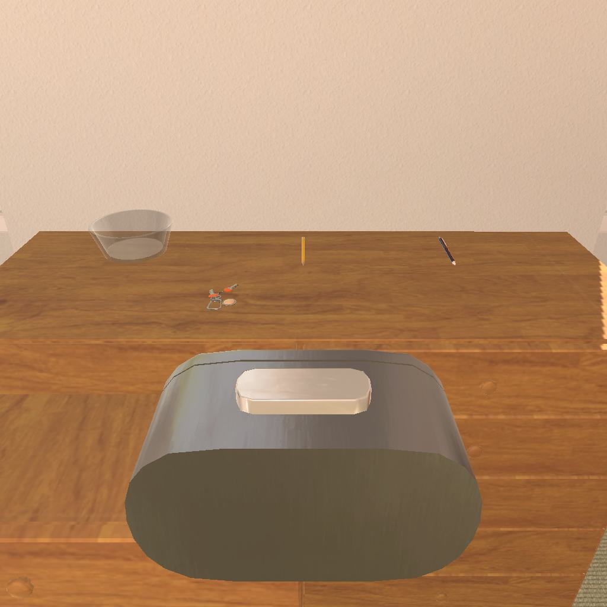
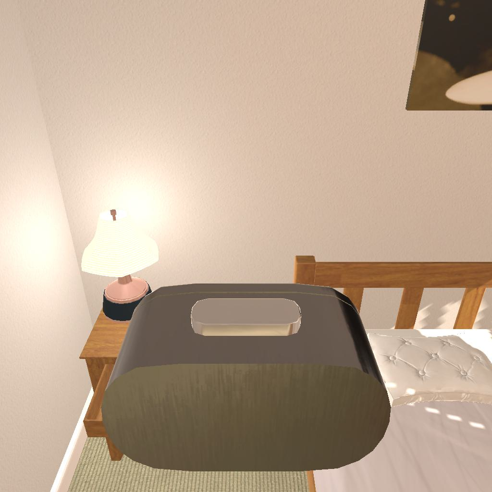

---------------------------------------------------------task: 0---------------------------------------------------------
--------------------------------------------------------------------------------------------------------------------------------------------------------------------
--------------------------------------------------------------------------------------------------------------------------------------------------------------------
Step:--------------------------------------------------------------------------11-------------------------------------------------------------------------------
----------------------------------------
VLM Prompt:
Image1:
Image2:
Image3:
**Instruction**
1. Analyze the provided images to identify all visible household objects and compare the difference between images (e.h. whether the object is opened or not and taken on hand or not), focusing on those relevant to the task description "look at alarmclock under the desklamp."
2. Use the analysis of images and the task hint "The agent must find an object of the desired type, locate and turn on a light source with the desired object in-hand." to answer the question: what is the most reasonable action in the choices for the task description "look at alarmclock under the desklamp"?
3. Decide and write the answer using the template: The answer is: (i): , where i is the real number. If there is no desired object in images, search every place based on **Initial Observation** to find the object. And if no one is exactly correct, choose a similar answer.
**Initial Observation**
You are in the middle of a room. Looking quickly around you, you can see bed (1), sidetable (1), drawer (1-11), dresser (1), safe (1), laundryhamper (1), garbagecan (1)
**Answer Choices**
(1): go to bed 1
(2): go to sidetable 1
(3): go to drawer 1
(4): go to dresser 1
(5): go to drawer 3
(6): go to drawer 4
(7): go to drawer 5
(8): go to drawer 6
(9): go to drawer 7
(10): go to drawer 8
(11): go to drawer 9
(12): go to drawer 10
(13): go to drawer 11
(14): go to safe 1
(15): go to laundryhamper 1
(16): go to garbagecan 1
(17): close drawer 2
(18): put alarmclock 1 in/on drawer 2
(19): examine alarmclock 1
(20): examine drawer 2
**Answer**
Let's think step by step by following the instructions.
----------------------------------------
----------------------------------------
Original Response:
Upon analyzing the provided images, we can see several household objects on top of a wooden dresser. The objects include a bowl, a pair of scissors, a pencil, duct tape, and a pen. Based on the task description "look at alarmclock under the desklamp," we are looking for an alarm clock and a desk lamp.
In Image1 and Image2, no changes are observed. However, in Image3, we see a large object appearing on the right side of the dresser, which could be a desklamp with a shade over it. There is no visible alarm clock on the dresser in any of the images.
Considering the task hint, the agent must find an alarm clock and then locate and turn on a light source with the alarm clock in hand. Since the alarm clock is not visible on the dresser and the desklamp appears to be off or not fully visible, the agent must search elsewhere to find the alarm clock.
Based on **Initial Observation**, the agent should search the places where an alarm clock might typically be found, such as a bedside table or drawers. Therefore, the most reasonable action would be to go to the sidetable or check the drawers.
The answer is: (2): go to sidetable 1
----------------------------------------
----------------------------------------
>>> Refine Original VLM Response and Get Pure Action: go to sidetable 1
----------------------------------------
-----------------------------------------------------------------
Running time: 10.352847576141357 seconds
Total Money: 0.40608999999999995
-----------------------------------------------------------------
-----------------------------------------------------------------
Text Observation:You arrive at loc 1. On the sidetable 1, you see a pillow 1, a desklamp 1, and a cellphone 1.
-----------------------------------------------------------------
SUCCEED